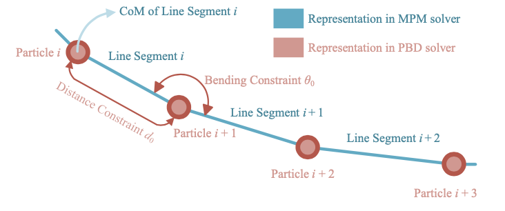
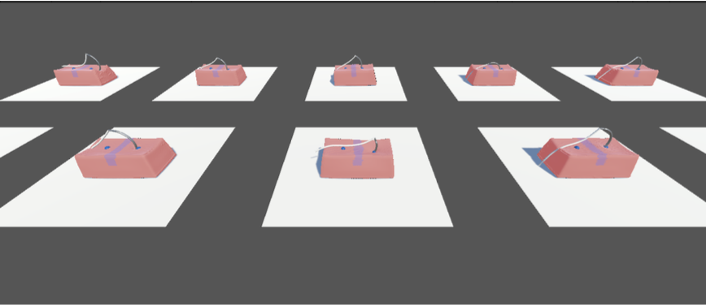
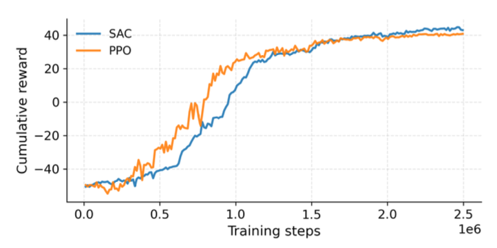

Simulation of Surgical Suturing Using Position-Based Dynamics and the Material Point Method

Project Date: 2025
Project Overview
This project introduces a high-performance surgical suturing simulator that combines a custom Material Point Method soft-tissue solver with a Position-Based Dynamics suture model. The simulator reproduces dynamic contact between a flexible thread, a curved surgical needle, and deformable tissue while remaining efficient enough for parallel reinforcement-learning environments.
The main technical challenge was coupling two different physics systems. The soft tissue is simulated using physically based continuum mechanics, while the suture is represented as a lightweight rope governed by positional constraints. A custom two-way coupling method transfers contact forces and momentum between these solvers.
Custom-Developed Physics
MPM Soft-Tissue Simulation
The soft tissue is simulated using the custom CUDA-accelerated CRESSim-MPM framework. Unlike simplified constraint-based tissue models, the Material Point Method represents tissue as a continuum material with physically meaningful deformation, stress, velocity, and mass.
- Tissue is discretized into moving Lagrangian material points.
- Each material point stores mass, velocity, deformation gradient, and stress information.
- Deformation calculations are performed on a temporary Eulerian grid.
- The solver supports large deformation and complex tool–tissue contact.
- CUDA kernels accelerate the particle and grid computations on the GPU.
MPM Simulation Pipeline
- Particle-to-Grid: Material-point mass, momentum, and stress are transferred to nearby grid nodes.
- Grid Update: Internal forces, external forces, contact, and momentum are resolved on the grid.
- Grid-to-Particle: Updated velocities and deformation information are transferred back to the tissue particles.
- Grid Reset: Temporary grid data are cleared before the next simulation step.
This approach preserves a stronger connection to material mechanics than using Position-Based Dynamics for the tissue itself. It therefore avoids relying entirely on artificial positional constraints and difficult non-physical parameter tuning to reproduce tissue behavior.
Position-Based Dynamics Suture
The surgical suture is represented as a chain of connected particles. Position-Based Dynamics was selected because it provides a stable and computationally efficient way to simulate flexible rope-like objects in real time.
- Distance constraints preserve the length between neighboring particles.
- Bending constraints control the curvature between particle triplets.
- XPBD compliance parameters provide controllable thread stiffness.
- The model does not require particle orientations.
- A rigged cylindrical mesh follows the particles to visualize the thread.
The PBD implementation is lightweight even when executed on the CPU. In the parallel simulator, the PBD rope calculation and visual alignment required only approximately 0.63 ms per simulation step, making soft-tissue computation the primary performance bottleneck.
Two-Way PBD–MPM Contact Coupling
A custom coupling layer was developed to enable the PBD suture to interact dynamically with the MPM tissue. Instead of constraining the thread to a predefined needle path, the system allows the suture and tissue to exchange forces during insertion and motion through the tissue.
Suture Representation Inside the MPM Solver
- Virtual line segments are constructed between neighboring PBD particles.
- Each segment is registered as a one-dimensional contact geometry in the MPM solver.
- These geometries allow the tissue grid to detect contact with the thread during the MPM grid-update stage.
- Frictional and drag forces model resistance as the suture moves through deformable tissue.
Two-Way Momentum Transfer
- PBD particle positions are used to update the virtual line segments.
- The MPM solver detects contact between the segments and the tissue.
- Contact forces from the thread modify the tissue-grid momentum.
- The resulting tissue reaction impulses are recorded by the MPM solver.
- These impulses are transferred back to the corresponding PBD particles.
- The next PBD step updates the thread using both its internal constraints and the tissue-contact response.
This creates a closed physical interaction loop: the suture pushes and deforms the tissue, while the tissue resists and redirects the suture. The method produces stable and visually plausible suture–tissue interaction without treating the thread as a purely kinematic object.
Needle–Tissue Interaction
The curved surgical needle is represented as a one-dimensional arc-shaped manifold during contact with the tissue. The custom contact model permits tangential motion along the needle curve while constraining unrealistic motion away from the insertion path.
- The needle penetrates and travels through the deformable MPM body.
- Contact is resolved directly during the MPM grid update.
- The attached PBD thread follows the needle while remaining dynamically coupled to the tissue.
- The complete system supports insertion, needle driving, and extraction.
Massively Parallel Simulation
The simulator was designed for robot learning, where thousands or millions of interactions must be collected efficiently. Multiple independent suturing scenes can run concurrently, with each scene containing its own tissue, needle, suture, physics state, and reinforcement-learning agent.
Parallel Environment Architecture
- Ten independent training environments were executed concurrently.
- Each environment contained an MPM tissue model with 20,000 material points.
- Each environment also contained a PBD suture with 20 particles.
- The profiled setup therefore simulated approximately 200,000 tissue material points at once.
- Every environment maintained separate physics and reinforcement-learning state.
CUDA Stream Parallelism
Scene-related memory transfers and MPM computations were separated across multiple CUDA streams. This allows GPU operations from different scenes and solver stages to overlap rather than being executed entirely in sequence.
- Separate CUDA streams process independent simulation scenes.
- Data transfers can overlap with physics-kernel execution.
- MPM steps from different environments can occupy the GPU concurrently.
- Two CUDA streams provided the largest practical performance improvement on an NVIDIA RTX 4090.
- Additional streams produced smaller gains because of GPU resource limitations such as register pressure.
Physics Performance Results
CUDA Stream Scaling
- 1 CUDA stream: 5.85 ± 0.15 ms per MPM physics step
- 2 CUDA streams: 2.10 ± 0.13 ms per MPM physics step
- 3 CUDA streams: 1.97 ± 0.17 ms per MPM physics step
- 4 CUDA streams: 1.70 ± 0.20 ms per MPM physics step
Moving from one to two CUDA streams reduced the measured MPM step time by approximately 64%. This demonstrated that scene-level concurrency and asynchronous GPU execution substantially improved the throughput of the parallel simulator.
Component-Level Performance
- MPM soft-tissue physics: 4.96 ± 0.35 ms
- PBD physics and visual alignment: 0.63 ± 0.07 ms
- MPM soft-tissue rendering: 0.60 ± 0.70 ms
The results show that the custom MPM soft-body solver dominates the computational cost, while the PBD thread remains inexpensive. This hybrid design enables physically richer soft-tissue behavior without sacrificing the speed required for reinforcement learning.
Reinforcement-Learning Environment
A parallel reinforcement-learning task was developed to validate that the custom physics framework can support autonomous surgical skill learning. The task was divided into three sequential phases.
- Needle Insertion: Guide the needle tip toward the designated entry marker.
- Needle Driving: Rotate the curved needle through the tissue while minimizing unwanted translational sliding.
- Needle Extraction: Exit the tissue through the designated target marker.
Training Setup
- Unity ML-Agents Toolkit
- Proximal Policy Optimization and Soft Actor-Critic
- Ten concurrent simulation environments
- 250 × 250 RGB visual observations
- Needle position and orientation observations
- Three temporally stacked observations
- 0.004-second simulation time step
- Actions issued every 20 simulation steps
- NVIDIA RTX 4090 GPU
Robot-Learning Results
Needle Insertion
- 80% success within the strict 0.075 UU threshold
- 85% success within the 0.12 UU threshold
- 91% success within the 0.18 UU threshold
Needle Extraction
- 68% success within the strict 0.075 UU threshold
- 74% success within the 0.12 UU threshold
- 85% success within the 0.18 UU threshold
Both PPO and SAC demonstrated stable policy improvement. Exit accuracy was lower than insertion accuracy because the needle becomes visually occluded after entering the tissue, forcing the policy to rely more heavily on proprioceptive observations and its previously selected trajectory.
Main Contributions
- Extended CRESSim-MPM with a real-time PBD surgical-suture model.
- Developed custom continuum-based soft-tissue physics using MPM.
- Introduced two-way contact coupling between PBD rope particles and MPM soft tissue.
- Modelled frictional and drag interaction between the suture and tissue.
- Integrated curved-needle penetration with deformable-tissue contact.
- Implemented scene-level GPU parallelism using multiple CUDA streams.
- Built ten concurrent physics-rich environments for robot learning.
- Validated the framework by training autonomous needle-insertion, driving, and extraction policies.
Current Limitations
- Needle motion is currently restricted to a planar workspace.
- The needle is treated directly as the agent rather than being controlled through a complete surgical manipulator.
- Needle re-grasping and hand-off are not yet modelled.
- Suture self-collision and knot tying are not currently supported.
- Full dual-arm autonomous suturing remains future work.
Technologies Used
- Material Point Method
- Position-Based Dynamics and XPBD
- Custom PBD–MPM Contact Coupling
- Continuum Soft-Tissue Mechanics
- CUDA and CUDA Streams
- GPU-Parallel Simulation
- CRESSim-MPM
- Unity
- Unity ML-Agents
- Proximal Policy Optimization
- Soft Actor-Critic
- NVIDIA RTX 4090
Project Gallery


